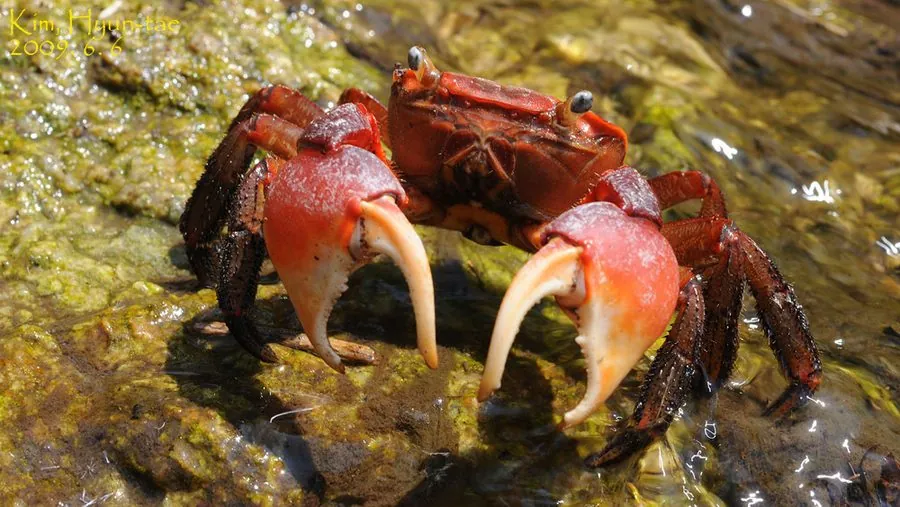

甲壳动物 · 动物界
红螯螳臂蟹 Chiromantes haematocheir

东亚常见的河口蟹类，螯足呈鲜红色，繁殖期成群向海边迁移，在淡水河流和河口之间完成生活史，俗称红螯蟹。
- 分类
- 门节肢动物门纲软甲纲目十足目科相手蟹科属螳臂蟹属
- 栖息环境
- 河口、河流下游、红树林的河岸洞穴、石缝和泥滩
- 地理分布
- 中国东部、日本和朝鲜半岛的河口与河流下游
- 保护级别
- IUCN 暂无评估；中国未列入国家重点保护名录
物种志
红螯螳臂蟹头胸甲宽 3–4 cm，近方形，体色深褐或灰褐，螯足呈鲜红色，雄蟹螯足较大，掌部有齿；步足粗壮，末端尖锐，适合在河岸、泥滩和石缝间行走。
它分布于中国东部、日本和朝鲜半岛的河口、河流下游和红树林，栖息于河岸洞穴、石缝和潮间带泥滩，杂食，取食藻类、腐叶、小动物尸体和有机碎屑。繁殖期成蟹成群向海迁移，在咸淡水交汇处产卵，幼体经浮游阶段后溯河进入淡水生长。红螯螳臂蟹是河口生态系统的常见蟹类，也是许多鱼类和鸟类的食物；它的红螯在求偶和威吓时格外醒目，夜间退潮时泥滩上常能看到成群的个体。目前 IUCN 暂无评估；中国未列入国家重点保护名录。
形态与习性
- 食性杂食，取食藻类、腐叶、动物尸体和碎屑
- 体型头胸甲宽 3–4 cm
- 识别螯足鲜红色，雄蟹螯足较大
- 习性河岸挖洞，夜间退潮时活动
- 繁殖成蟹向海迁移，幼体浮游后溯河生长
- 生态作用河口食物链中的常见环节
趣味知识
- 红螯螳臂蟹的螯足鲜红，在灰褐色的泥滩上非常显眼。
- 繁殖季节，成群的成蟹会从河流下游向海边迁移。
- 幼蟹在海水中孵化后，会逆流而上回到淡水里长大。